| SOURCE | TITLE| IMAGE MATCH | click to source page |
| World Register of Marine Species (WoRMS) | WoRMS - World Register of Marine Species | 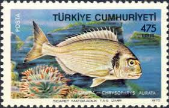 |
| CollectorBazar | Fish on Stamps Used Turkey - P5153 | 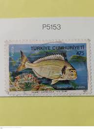 |
| Wikipedia | Stenotomus - Wikipedia | 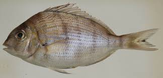 |
| ZME Science | Do fish have feelings? Science suggests so | 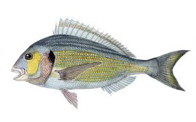 |
| eBay | Greece Butterflies Shells & Fishes 1981 MNH Cockies Parrot fishes Collias Hyale | eBay | 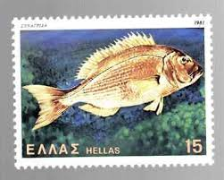 |
| Looking for a gilt-head bream fish pattern to make 🐟 : r/crochetpatterns | 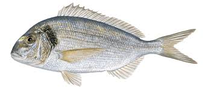 | |
| WoRMS - World Register of Marine Species | WoRMS - World Register of Marine Species - Diplodus vulgaris (Geoffroy Saint-Hilaire, 1817) | 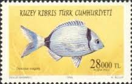 |
| Rare Fish Prints | Zoology of New York - The Fishes 1842 - JAMES E. DE KAY Fish Prints 1842 | 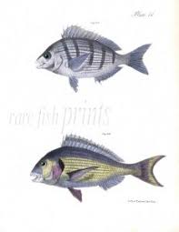 |
| Post Road Company | Collectible Stamp Iran Scott 1700, Year 1973 | 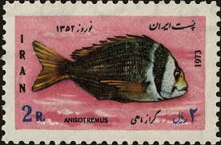 |
| oraqua.eu | Implications of basic organic farming principles on aquaculture | 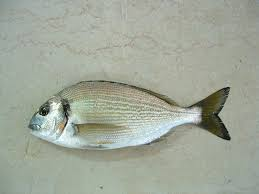 |
| eBay | Greece 1981 COMMON DENTEX FISH MLH Scott 1400 | eBay | 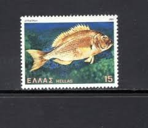 |
| Sketchfab | Bream Fish Sar - 3D model by BlueMesh [aac431d] - Sketchfab | 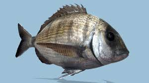 |
| CIESM | Pagellus bellottii. pp 170-171 in Atlas of Exotic Fishes in the Mediterranean Sea (F. Briand Ed.). 2021. CIESM Publishers. | 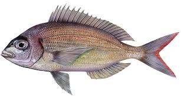 |
| eBay | Greece #Mi1459 MNH 1981 Common Dentex Dentex dentex [1400] | eBay | 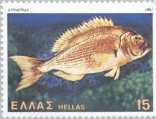 |
| Tumblr | Sparus aurata / Gilthead seabream – @nagashimayusei on Tumblr | 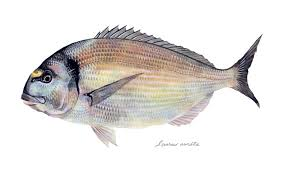 |
| Flickr | Typography of the 50's | Flickr | 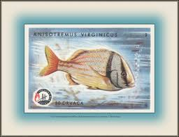 |
| iNaturalist | Photos of Sea bream (Dentex canariensis) · iNaturalist | 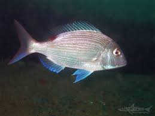 |
| Etsy | Vintage Fish Print, Tropical Fish Print, Fish Wall Art, Nautical Print, Horizontal - Etsy | 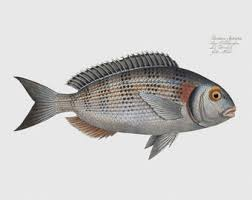 |
| COMC.com | 1954 The White Fish Authority The Fish We Eat Non-Sports Cards | 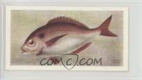 |
| WoRMS - World Register of Marine Species | WoRMS - World Register of Marine Species - Gymnocranius elongatus Senta, 1973 | 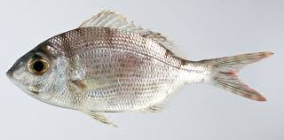 |
| Pixers | Wall Mural Pagellus mormyrus Fish - PIXERS.US | 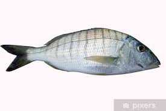 |
| iStock | Fish Illustration From 1554 Stock Illustration - Download Image Now - 16th Century Style, Animal, Biology - iStock | 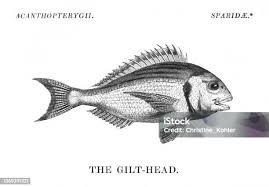 |
| cloudfront.net | Presentación de PowerPoint | 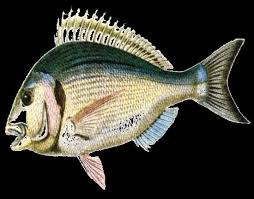 |
| Squarespace | Maren Wellenreuther Seafood Research Unit, Nelson | 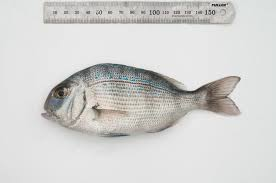 |
| Artvee | Pleuronectes Argus, The Argus-Flounder. - Artvee | 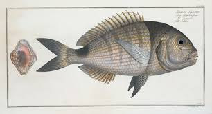 |
| Rare Fish Prints | Fisch Buch 1598 - CONRAD GESNER - Fish Prints 1560 & 1598 *** NEW SELECTIONS | 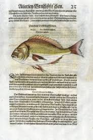 |
| Vecteezy | Blue fish with vibrant red fins and tail detailed scales isolated on transparency background aquatic animal digital illustration colorful marine life side view realistic style 73517585 PNG | 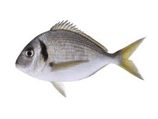 |
| Fishbox | Goldlined seabream: Fishing Regulations, Lures, Behavior, and Prime Locations | 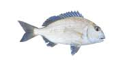 |
| Fine Art America | Vintage Fish Illustration - White Seabream Shower Curtain by Studio Grafiikka - Fine Art America | 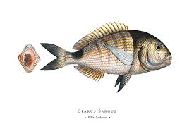 |
| CT.GOV-Connecticut's Official State Website (.gov) | How to Catch Saltwater Fish | 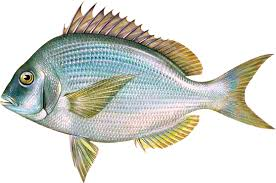 |
| Album Online | Histoire physique, Naturelle, Et politique de Madagascar, Paris, Impr. nationale, 1885-, Maps, Natural history, Lepidoptera, Madagascar, Description and travel,, Three sp - Album alb15395874 | 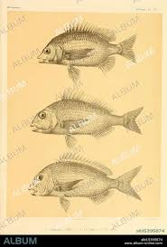 |
| FishBase | Thumbnails Summary | 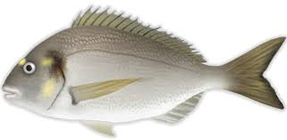 |
| Kalami Beach Taverna | Our Catch | 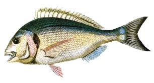 |
| Pngtree | Dorado Fish Isolated On White Background Natural, Tail, Kitchen, Food PNG Transparent Image and Clipart for Free Download | 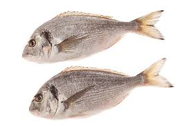 |
| Scandposters.com | diplodus vulgaris | 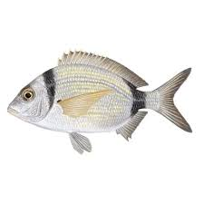 |
| BioLib.cz | Image - Diplodus vulgaris (Blacktail Bream) | BioLib.cz | 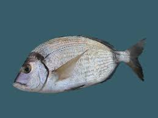 |
| .:: GEOCITIES.ws ::. | PhotoLibrary5 | 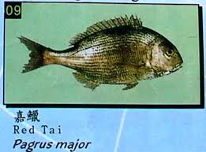 |
| Wikipedia | File:Snapper02 melb aquarium.jpg - Wikipedia | 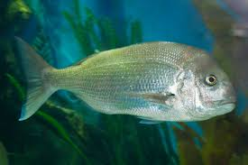 |
| irelandscouts.ie | Fish species of Ireland | 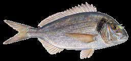 |
| Wikipedia | Diplodus annularis - Wikipedia, a enciclopedia libre | 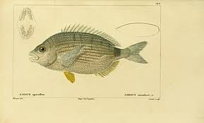 |
| Rare Fish Prints | 1598 GESNER FISH PRINT - THE GILT-HEAD SEA BREAM | 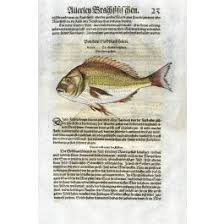 |
| RigModels | Bream Fish 3D Model | 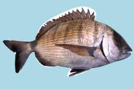 |
| odysseaplatform.eu | Fisheries stock assessment and management | 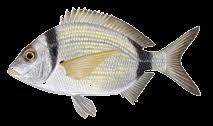 |
| Le Manciane | Farmhouse Le Manciane in Cavallino Treporti - Lio Piccolo | 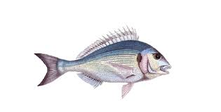 |
| website-files.com | Product Details | 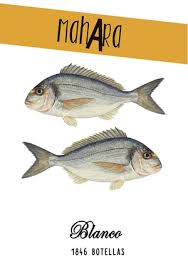 |
| WordPress.com | recreational fish pics | 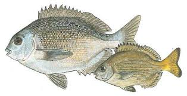 |
| YouTube | HANGİ BALIK HANGİ YEMLE TUTULUR!!! - YouTube | 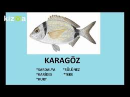 |
| Squarespace | Scup (aka Porgy) | 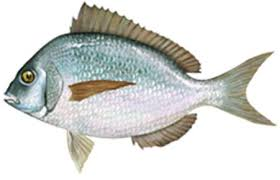 |
| FAVPNG.com | Red Porgy Bluespotted Seabream Pagrus Major Common Pandora Fish PNG | 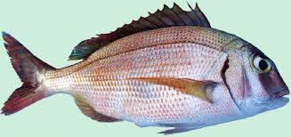 |
| Getty Images | Gilthead Bream Fish Engraving 1842 High-Res Vector Graphic - Getty Images | 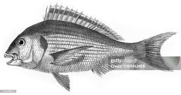 |
| iStock | The Pinfish Lagodon Rhomboides Is A Saltwater Fish Of The Sparidae Family The Breams And Porgiesisolated On White Background Stock Photo - Download Image Now - iStock | |
| Muir Way | Scuppaug (Scup) (Northern Porgy) - 1884 Print | Muir Way | |
| FishBase | Acanthopagrus bifasciatus, Twobar seabream : fisheries | |
| iStock | Whole Raw Snapper Fish Stock Photo - Download Image Now - 2015, Animal, Animal Body Part - iStock | |
| Bridgeman Images | Marcus Elieser Bloch (1723-1799)' images and/or videos results | |
| love that image created by my good friend Jan a while ago...involving my portrait of Fish ✏️ | ||
| Phys.org | Baited video carries baseline data in Cockburn Sound | |
| Amazon.com | Amazon.com: Sushi: klassische und neue Ideen - ganz einfach selbst gemacht: 9783831032839: Barber, Kimiko, Takemura, Hiroki: Books | |
| Pngtree | Dentex Vulgaris Toothed Sparus Snapper Fish Length Vulgaris Silver Photo Background And Picture For Free Download - Pngtree |
{kind=link}